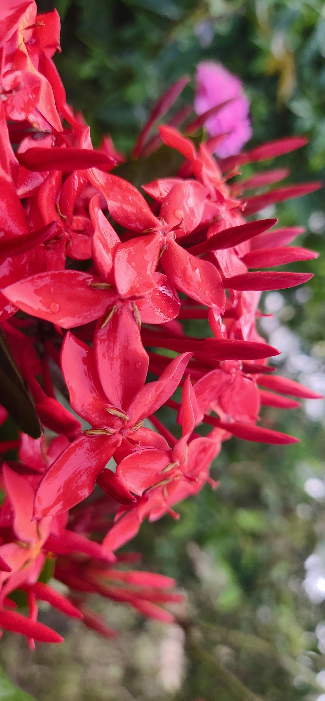

Photo: Saktheeswaran Govindarajan / UnsplashAccelerator Workshop · India 2026
Build confidence through repeated practice.
Work with multiple compost piles, biological preparations, samples, and field applications so that the process becomes more familiar and repeatable.